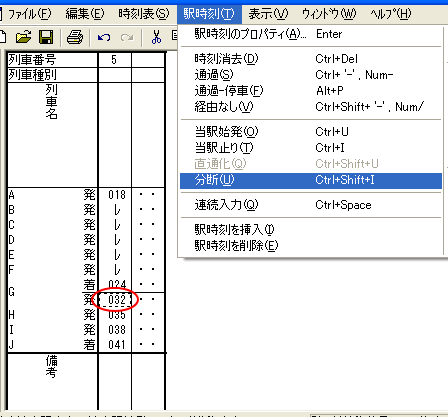

Ａ駅からＢ駅までの列車を、途中のＣ駅止まりに変更したいときは、その列車のＣ駅の時刻にフォーカスセルを設定して、メニューコマンド
[駅時刻]-[当駅止り] を選択してください。
これにより、その駅以降の時刻がすべて [運行なし] に変わります。
また、Ａ駅からＢ駅までの列車を、途中のＣ駅始発に変更したいときは、その列車のＣ駅の時刻にフォーカスセルを設定して、メニューコマンド [駅時刻]-[当駅始発] を選択してください。
Ａ駅からＢ駅までの列車を、途中のＣ駅を境に A駅からC駅までの列車と、C駅からB駅までの2本の列車にすることもできます。
※ 列車をコピーして、片方に[駅時刻]-[当駅どまり]・もう片方に[駅時刻]-[当駅始発]を行ったのと、ほぼ同じ効果があります。
(1) フォーカスを、対象となる列車の、分断したい駅に移動してください。(着・発はどちらでもかまいません)
(2) メニューコマンド[駅時刻]-[分断]を選択してください。

→OuDiaは、フォーカスのある列車を、フォーカスのある駅で分断します。
［１］ その列車の始発駅・終着駅での分断はできません。
［２］ 駅時刻に着時刻も発時刻も指定されていない駅では、この機能は使用できません。